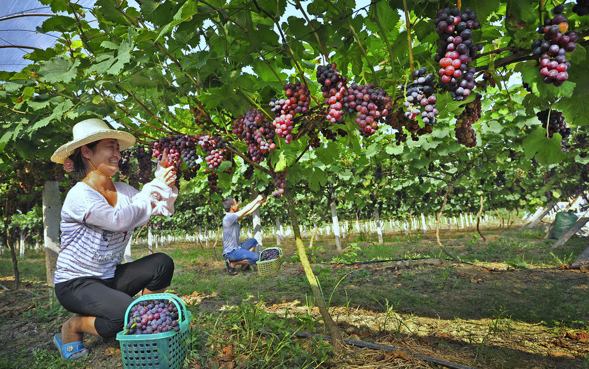
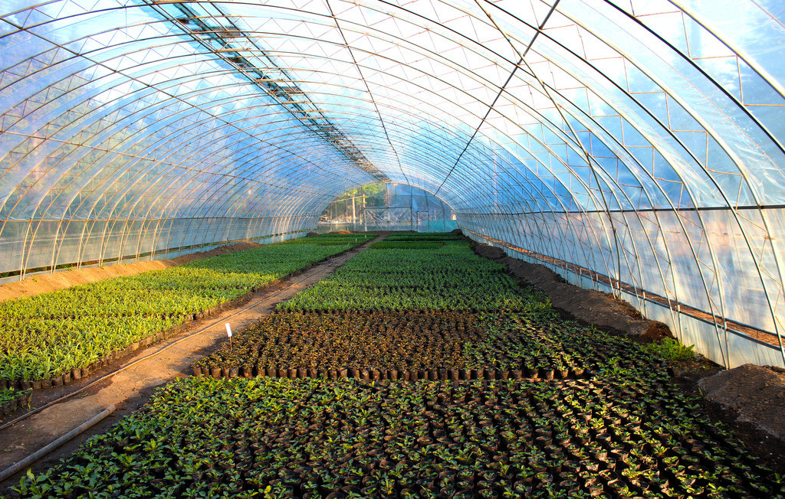
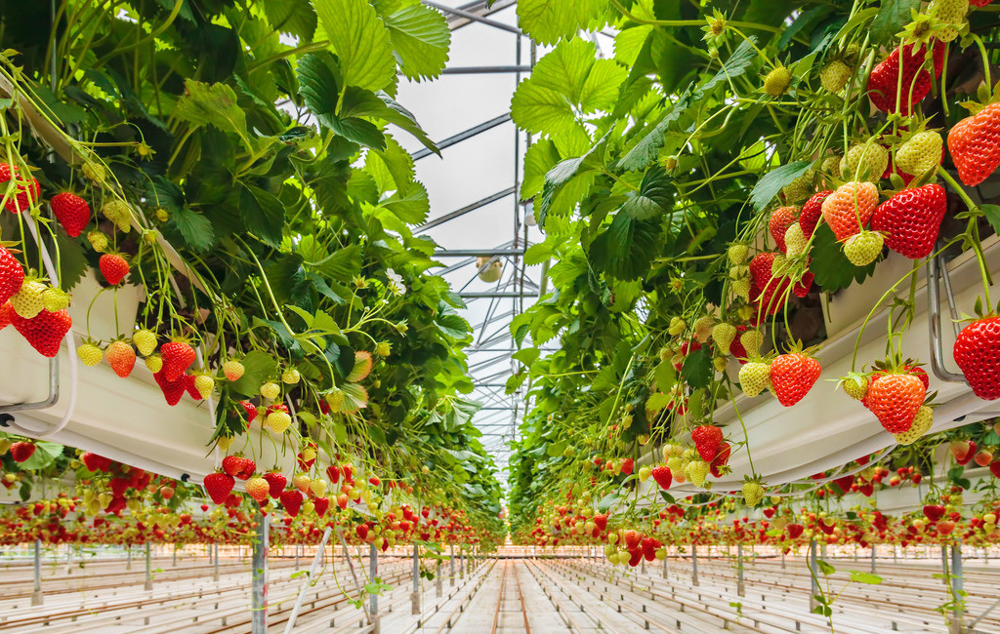
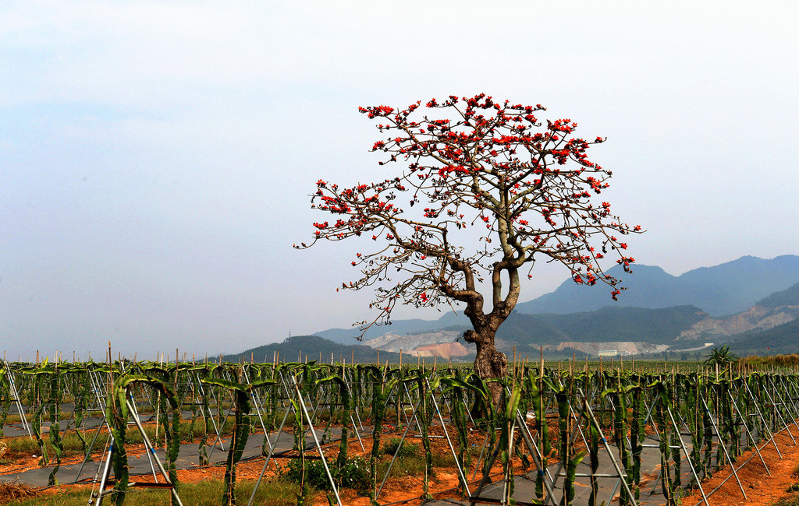

- vineyards
- Greenhouse cultivation
 Mechanized planting
Mechanized planting-  soilless culture
-  Modern agricultural Manor
农业部副部长余欣荣强调： 扎实推进种业人才发展和科研成果权益改革 确保实现预期目标
为加快推进种业人才发展和科研成果权益改革试点工作，增强现代种业发展活力 ，9月26日农业部专门召开会议，听取10个改革重点省市以及相关科研机构的情况汇报。
承稳粮国安之重——我国民族种业改革创新发展记
编者按粮食是社稷之本，种业是粮食之基。我国种业从新中国成立之初的空白起步， 经过几十年的不懈努力，在同心共筑中不断发展壮大。特别是进入新世纪以来，我国种业在外有国际竞争压力、 内有转方式调结构的挑战中，不断改革创新，向纵深区攻坚挺进， 逐步冲破体制机制的桎梏，焕发出新的活力和光芒。
全国种业人才发展和科研成果权益改革工作视频会议要求 深入推进种业科研体制改革 形成充满活力的种业发展新局面
本网讯 7月18日，全国种业人才发展和科研成果权益改革工作视频会议在北京召开， 农业部副部长张桃林出席会议并讲话。会议强调，深入推进种业人才发展和科研成果权益改革， 是贯彻党中央国务院创新驱动和人才发展一系列决策部署的战略举措，是加快发展现代种业、 建设种业强国的现实要求，要上下联动，统筹推进， 因地制宜，务求实效，努力形成充满活力的种业发展新局面。
全国人大常委会办公厅新闻发布会种子法修订相关内容
十二届全国人大常委会第十七次会议举行了闭幕会，会议以149票赞成、5票弃权， 表决通过了种子法修订案。会议闭幕后， 全国人大常委会办公厅召开新闻发布会， 有关方面负责人就本次会议表决通过的法律有关问题回答记者提问。
推进改革措施落实加快现代种业发展
刚刚过去的2014年，我国现代种业改革发展取得了显著进展，这是值得我们回顾总结的难忘一年。一年来， 中央领导同志高度重视种业改革发展，国家有关部门和各地区积极支持种业改革发展，种业各界及全社会主动顺应种业改革发展， 围绕落实国务院关于深化种业体制改革的部署，启动了种业科技成果权益比例试点，制定了国家南繁育种基地建设规划， 出台了一批扶持种业发展的新政策， 现代种业呈现蓬勃发展的新局面。总的一句话，就是坚持抓落实，要让这些政策措施落地生根、开花结果。
辽宁省人民政府关于加快推进现代农作物种业发展的实施意见
农作物种业是国家战略性、基础性核心产业，是促进全省农业长期稳定发展、保障粮食安全的根本。为认真贯彻落实《国务院关于加快推进现代农作物种业发展的意见》（国发〔2011〕8号） ，现就进一步加强全省现代农作物种业资源整合， 推进良种培育推广，加快现代农作物种业发展提出如下实施意见：
贵州省人民政府办公厅关于深化种业体制改革提高创新能力的意见
各市、自治州人民政府，贵安新区管委会，各县(市、区、特区)人民政府，省政府各部门、各直属机构： 为贯彻落实《国务院办公厅关于深化种业体制改革提高创新能力的意见》 (国办发〔2013〕109号)精神，加快推进我省现代种业发展，经省人民政府同意， 现提出如下实施意见。


- 农业部副部长余欣荣强调： 扎实推进种业人才发展和科研成果权益改革 确保实现预期目标
- 承稳粮国安之重——我国民族种业改革创新发展记
- 全国种业人才发展和科研成果权益改革工作视频会议要求 深入推进种业科研体制改革 形成充满活力的种业发展新局面
- 全国人大常委会办公厅新闻发布会种子法修订相关内容
- 推进改革措施落实加快现代种业发展
- 辽宁省人民政府关于加快推进现代农作物种业发展的实施意见
- 贵州省人民政府办公厅关于深化种业体制改革提高创新能力的意见
- 春夏播种子供应充足 质优价稳销
- 平地栽参技术：让人参像萝卜一样种
- 张家口市农科院育成莜麦新品种“坝莜18号”
- 观赏性强的黄金泥鳅也能批量繁殖了
- “黑玫瑰”葡萄试种成功
- 印度抗粉虱棉花品种培育成功
- 荷兰瓦赫宁根大学模拟火星种植蔬菜
- 烟台海肠苗种繁育成功
- 杨凌育成首个油菜机收专用品种
- 韩国研发出白菜长期储存技术
- 中国首个转基因玉米种子产品将卖给美国